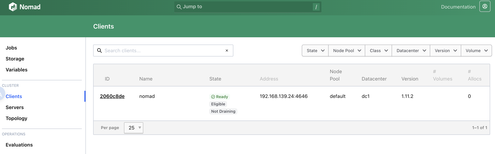

consul + nomad + apisix
consul
推荐看直播录制的视频，讲的很好 很轻松 Getting into HashiCorp Consul
还有个生产部署推荐配置 production-vms
推荐使用官方源直接安装 install 配置文件和目录会直接配置好，无需自己规划
# 直接启动
$ sudo consul agent -dev -bind 192.168.139.24 -client 0.0.0.0
==> Starting Consul agent...
Version: '1.22.5'
Build Date: '2026-02-26 11:50:53 +0000 UTC'
Node ID: '7da7829f-ccfd-2841-1805-540d3ee3c491'
Node name: 'consul'
Datacenter: 'dc1' (Segment: '<all>')
Server: true (Bootstrap: false)
Client Addr: [0.0.0.0] (HTTP: 8500, HTTPS: -1, gRPC: 8502, gRPC-TLS: 8503, DNS: 8600)
Cluster Addr: 192.168.139.130 (LAN: 8301, WAN: 8302)
Gossip Encryption: false
Auto-Encrypt-TLS: false
ACL Enabled: false
Reporting Enabled: false
ACL Default Policy: allow
HTTPS TLS: Verify Incoming: false, Verify Outgoing: false, Min Version: TLSv1_2
gRPC TLS: Verify Incoming: false, Min Version: TLSv1_2
Internal RPC TLS: Verify Incoming: false, Verify Outgoing: false (Verify Hostname: false), Min Version: TLSv1_2
获取服务状态
$ curl http://127.0.0.1:8500/v1/catalog/services
{
"consul": [],
"nomad": [
"serf",
"rpc",
"http"
],
"nomad-client": [
"http"
]
}
获取单个服务详细状态
$ curl http://127.0.0.1:8500/v1/catalog/service/hello-world-servers
[
{
"ID": "ff7990be-d401-8a26-3698-76ee6a04e0c5",
"Node": "nomad",
"Address": "192.168.139.24",
"Datacenter": "dc1",
"TaggedAddresses": {
"lan": "192.168.139.24",
"lan_ipv4": "192.168.139.24",
"wan": "192.168.139.24",
"wan_ipv4": "192.168.139.24"
},
"NodeMeta": {
"consul-network-segment": "",
"consul-version": "1.22.5"
},
"ServiceKind": "",
"ServiceID": "_nomad-task-d6ec357a-55be-23b8-65ff-f95e01fd4170-group-servers-hello-world-servers-www",
"ServiceName": "hello-world-servers",
"ServiceTags": [],
"ServiceAddress": "192.168.139.24",
"ServiceTaggedAddresses": {
"lan_ipv4": {
"Address": "192.168.139.24",
"Port": 23747
},
"wan_ipv4": {
"Address": "192.168.139.24",
"Port": 23747
}
},
"ServiceWeights": {
"Passing": 1,
"Warning": 1
},
"ServiceMeta": {
"external-source": "nomad"
},
"ServicePort": 23747,
"ServicePorts": null,
"ServiceSocketPath": "",
"ServiceEnableTagOverride": false,
"ServiceProxy": {
"Mode": "",
"MeshGateway": {},
"Expose": {}
},
"ServiceConnect": {},
"ServiceLocality": null,
"CreateIndex": 32,
"ModifyIndex": 32
}
]
nomad
本地用的 orbstack，在 orb 创建虚拟机然后在里面部署 nomad，因为要调用 /var/run/docker.sock 不可能在装个 docker，直接把 mac 文件的 /var/run/docker.sock 做软链接拿到虚拟机里用了，虚拟机是可以直接访问 mac 文件的。
直接在机器里重新装 docker，nomad 可以直接调用
$ sudo nomad agent -dev -bind 192.168.139.24 -network-interface=eth0
$ export NOMAD_ADDR=http://localhost:4646

贴一个测试 job，会直接映射到主机端口，apisix 可直接访问到。
job "hello-world" {
# Specifies the datacenter where this job should be run
# This can be omitted and it will default to ["*"]
datacenters = ["*"]
meta {
# User-defined key/value pairs that can be used in your jobs.
# You can also use this meta block within Group and Task levels.
foo = "bar"
}
# A group defines a series of tasks that should be co-located
# on the same client (host). All tasks within a group will be
# placed on the same host.
group "servers" {
# Specifies the number of instances of this group that should be running.
# Use this to scale or parallelize your job.
# This can be omitted and it will default to 1.
count = 1
network {
port "www" {
to = 8001
}
}
service {
provider = "consul"
port = "www"
address_mode = "host"
}
# Tasks are individual units of work that are run by Nomad.
task "web" {
# This particular task starts a simple web server within a Docker container
driver = "docker"
config {
image = "busybox:1"
command = "httpd"
args = ["-v", "-f", "-p", "${NOMAD_PORT_www}", "-h", "/local"]
ports = ["www"]
}
template {
data = <<-EOF
<h1>Hello, Nomad!</h1>
<ul>
<li>Task: {{env "NOMAD_TASK_NAME"}}</li>
<li>Group: {{env "NOMAD_GROUP_NAME"}}</li>
<li>Job: {{env "NOMAD_JOB_NAME"}}</li>
<li>Metadata value for foo: {{env "NOMAD_META_foo"}}</li>
<li>Currently running on port: {{env "NOMAD_PORT_www"}}</li>
</ul>
EOF
destination = "local/index.html"
}
# Specify the maximum resources required to run the task
resources {
cpu = 50
memory = 64
}
}
}
}
apisix
填加一个路由转发到 consul 中的 hello-world
$ curl http://127.0.0.1:9180/apisix/admin/routes/1 -H "X-API-KEY: edd1c9f034335f136f87ad84b625c8f1" -X PUT -i -d '
{
"uri": "/*",
"upstream": {
"service_name": "hello-world-servers",
"type": "roundrobin",
"discovery_type": "consul"
}
}'
admin api
获取状态
$ curl -s http://127.0.0.1:9180/apisix/admin/routes\?api_key\=edd1c9f034335f136f87ad84b625c8f1|jq